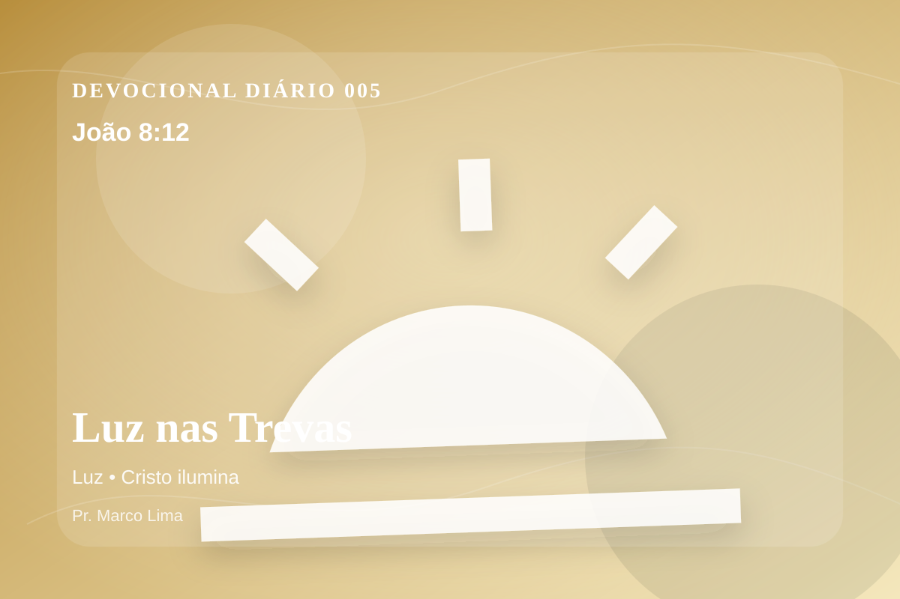

Luz nas Trevas
De novo, lhes falava Jesus, dizendo: Eu sou a luz do mundo; quem me segue não andará nas trevas; pelo contrário, terá a luz da vida.
Pensamento
A leitura de hoje convida você a diminuir o ruído, abrir a Bíblia com humildade e deixar que João 8:12 fale com profundidade.
Jesus não apenas aponta para a luz; Ele declara ser a própria luz do mundo. Segui-Lo significa sair das sombras da autossuficiência, do pecado escondido e da confusão espiritual.
O tema de luz precisa ser recebido com simplicidade e seriedade. Quando essa verdade encontra resistência dentro de nós, é justamente ali que o Espírito deseja trabalhar. Este tema aponta para a maneira como Deus forma o coração do Seu povo por meio da Palavra. A aplicação correta não nasce de frases soltas, mas de uma leitura reverente, contextual e obediente do texto bíblico.
A Palavra convida você a abandonar desculpas. Onde houver pecado, confesse; onde houver incredulidade, peça fé; onde houver cansaço, volte-se para Cristo.
Arrependimento não é apenas sentir peso na consciência; é voltar-se para Deus, abandonar o caminho que entristece o Senhor e confiar que a graça de Cristo é suficiente para perdoar e transformar.
Este é o evangelho que sustenta toda aplicação: Jesus Cristo morreu pelos pecadores, ressuscitou em vitória e chama cada pessoa a responder com fé, arrependimento e uma vida rendida ao Seu senhorio.
Deus não chama você para uma religiosidade sem vida, mas para reconciliação com Ele por meio de Cristo. Essa reconciliação começa com fé humilde e arrependimento sincero.
Se o texto trouxe consolo, adore. Se trouxe confronto, arrependa-se. Se trouxe direção, obedeça. Em tudo, volte os olhos para Cristo.
Para Praticar Hoje
- Leia João 8:12 lentamente e destaque uma palavra ou expressão central do texto.
- Confesse a Deus um pecado, resistência ou frieza espiritual que esta Palavra revelou.
- Declare sua fé em Jesus Cristo e pratique hoje uma atitude concreta de arrependimento e obediência.
Oração
Pai, João 8:12 é uma Palavra que alcançou meu coração hoje. Recebo-a com humildade. Transforma o que ouvi em obediência prática e em fé que se rende ao Teu evangelho.
{kind=link}